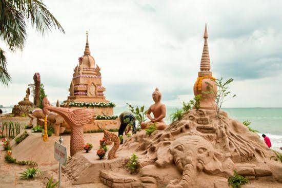
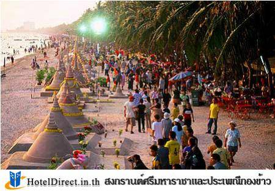
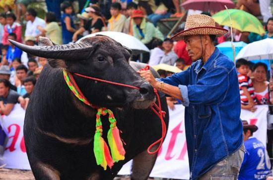

1. งานประเพณีวันไหลพัทยา-นาเกลือ จังหวัดชลบุรี

กำหนดจัดงานในวันที่ 18-19-20 เดือนเมษายน ของทุกปี ณ บริเวณสวนสาธารณลานโพธิ์ นาเกลือ และวัดชัยมงคล พัทยาใต้
มีกิจกรรมต่าง ๆ เช่น พิธีรดน้ำดำหัว ขบวนแห่วันไหล การสาดน้ำกันอย่างสนุกสนานของประชาชน และนักท่องเที่ยวทั้งชาวไทย ชาวต่างประเทศ เป็นเทศกาลสงกรานต์สุดแปลกแหวกแนวไม่เหมือนใคร เพราะจัดขึ้นช้ากว่าพื้นที่อื่นทั่วประเทศ โดยกำหนดให้จัดขึ้นหนึ่งสัปดาห์หลังจากเทศกาลสงกรานต์ปกติ ทำให้ประชาชนทั่วไปที่ยังไม่เต็มอิ่มกับเทศกาลสงกรานต์ สามารถเลือกที่จะเดินทางมาร่วมเทศกาลสุดสนุกที่พัทยาต่อได้อย่างไม่เคอะเขิน
เป็นที่รู้กันมานานว่าในภาคตะวันออก โดยเฉพาะพัทยานั้นจะนิยมเริ่มเล่นสาดน้ำสงกรานต์กันในราว ๆ วันที่ 18-20 เมษายน ซึ่งในช่วงเวลาดังกล่าวถูกเรียกว่า “วันไหล” นั่นเอง โดยกิจกรรมที่จะจัดขึ้นนั้นประกอบไปด้วย การทำบุญตักบาตรข้าวสารอาหารแห้ง การสรงน้ำพระ การรดน้ำขอพรผู้ใหญ่ การก่อเจดีย์ทราย การแสดงศิลปวัฒนธรรมต่าง ๆ การแสดงประเพณีกองข้าวนาเกลือ การประกวดนางสงกรานต์ และเล่นน้ำสงกรานต์บรรยากาศชายทะเลบนหาดยาวกว่า 3 กิโลเมตร ซึ่งกิจกรรมหลังสุดนี้ถือได้ว่าเป็นกิจกรรมระดับแม่เหล็กที่ทำให้งานประเพณีวันไหลพัทยา-นาเกลือโด่งดังไปทั่วโลก
นอกจากนี้ยังมีกิจกรรมความบันเทิง ทั้งการแสดงและคอนเสิร์ตอีกมากมาย เรียกได้ว่า มางานนี้มันส์กันเต็มที่ สนุกกันทั้งเมือง โดยทางผู้จัดงานกระซิบมาว่า ขอความร่วมมือทุกคนเล่นน้ำกันอย่างสุภาพ งดแป้งและอุปกรณ์ที่มีอันตราย รวมทั้งควรแต่งกายสุภาพ เพื่อภาพลักษณ์ที่ดีของประเทศไทย
2. งานประเพณีก่อพระทรายวันไหล บางแสน จังหวัดชลบุรี

เป็นงานประเพณีที่ชาวตำบลแสนสุขได้ถือปฏิบัติมาตั้งแต่สมัยโบราณ เดิมเรียกว่า งานทำบุญวันไหล คือการที่ประชุมในหมู่บ้านต่าง ๆ ได้มาทำบุญร่วมกันเนื่องในเทศกาลวันสงกรานต์หรือวันปีใหม่ของไทย โดยการนิมนต์พระทุกวัดที่อยู่ในเขตตำบลแสนสุขมาประกอบพิธีสงฆ์ มีการทำบุญ ตักบาตร สรงน้ำ หลังจากนั้นก็เป็นกิจกรรมก่อพระเจดีย์ทราย เล่นสาดน้ำ การละเล่น และกีฬาพื้นบ้าน เป็นต้น
งานประเพณีก่อพระทรายวันไหล เป็นงานที่ทางเทศบาลเมืองแสนสุขจัดขึ้นเป็นประจำทุกปี ในช่วงวันที่ 16-17 เมษายน โดยมีวัตถุประสงค์เพื่ออนุรักษ์ ส่งเสริมวัฒนธรรมประเพณี และการละเล่นพื้นบ้านอันดีงามของชาวบางแสนให้คงอยู่ และเป็นที่รู้จักแพร่หลายตลอดไป โดยเทศบาลฯ ร่วมกับบริษัทห้างร้านภาคเอกชน และหน่วยงานของรัฐในเขตเทศบาล ได้ร่วมกันจัดงานประเพณีอันยิ่งใหญ่นี้ ณ บริเวณชายหาดบางแสน
กิจกรรมในงานประกอบด้วย การประกวดก่อพระเจดีย์ทราย การทำบุญตักบาตร สรงน้ำพระพุทธรูป การละเล่นพื้นบ้าน รดน้ำสงกรานต์ ตลอดจนการแข่งขันกีฬาพื้นบ้าน เช่น การแข่งขันชักเย่อ การแข่งขันกินข้าวหลาม การแข่งขันแกะหอยนางรม การแข่งขันวิ่งเปี้ยว และการแข่งขันตะกร้อรอดห่วง
ประเพณีวันไหลสำหรับคนไทยในอดีต นิยมสร้างพระเจดีย์ไว้ในวัด ถือว่าพระเจดีย์เป็นปูชนียสถานสำคัญ วัดทุกวัดจึงมีพระเจดีย์อยู่ในวัด ทั้งขนาดองค์ใหญ่ ขนาดองค์กลาง และขนาดองค์เล็ก พระเจดีย์องค์ใหญ่ที่สุดนิยมสร้างไว้หลังพระอุโบสถหรือพระวิหารเพื่อบรรจุพระบรมสารีริกธาตุ เมื่อนมัสการพระประธานในพระอุโบสถ ก็เท่ากับได้กราบนมัสการพระบรมสารีริกธาตุด้วย สำหรับประเพณีวันไหล เป็นประเพณีไทยที่ได้ปฏิบัติกันมาตั้งแต่สมัยสุโขทัยเป็นราชธานี กล่าวคือ เป็นการทำบุญในวันเทศกาลตรุษไทยนั่นเอง
เมื่อถึงประเพณีตรุษไทย รายละเอียดของกิจกรรมการก่อพระเจดีย์ทราย คือการขนทราย หาบทรายมากองสูงแล้วรดน้ำเอาไม้ปั้น กลึงเป็นรูปทรงเจดีย์ ปักธงทิวต่าง ๆ ตกแต่งกันอย่างวิจิตรบรรจง เพื่อก่อให้ครบ 84,000 กองเท่าจำนวนพระธรรมขันธ์ เมื่อก่อเสร็จ พระเจดีย์ทรายแต่ละกองก็จะมีธงทิว พร้อมด้วยผ้าป่า ตลอดจนสมณบริขารถวายพระ พระสงฆ์ก็จะพิจารณาบังสุกุล ทำบุญเลี้ยงพระ เสร็จก็เลี้ยงคนที่ไปร่วมงาน ทางวัดก็ได้ทรายไว้สำหรับสร้างเสนาสนะ ปูชนียสถานในวัด หรือถมบริเวณวัดต่อไป
พระสงฆ์ซึ่งได้เครื่องปัจจัยไทยธรรมต่าง ๆ ในเทศกาลตรุษไทย คือเดือน 5 ขึ้น 1 ค่ำ ปกติหลังตรุษไทยไปเล็กน้อยเป็นปลายฤดูร้อนจะย่างเข้าฤดูฝน วัดใดที่อยู่ใกล้ห้วย หนอง คลอง บึง ญาติโยมอุบาสกอุบาสิกาของวัดก็จะจัดประเพณีก่อพระทรายน้ำไหลขึ้น วิธีการคือขุดลอกทรายที่ฝนซัดไหลมาลงรวมให้แข็งอยู่ตามคลอง หนอง บึง เป็นการขนทรายเข้าวัดและเป็นการพัฒนาท้องถิ่นด้วย เมื่อถึงฤดูฝน น้ำฝนจะได้ไหลสะดวก คู คลอง หนอง บึงไม่ตื้นเขิน หมู่บ้านสะอาด น้ำก็ไหลได้ตามปกติ งานก่อพระทรายน้ำไหลเพื่อก่อองค์เจดีย์พุทธบูชา เพื่อทำบุญเลี้ยงพระ เนื่องในเทศกาลตรุษไทย กิจกรรมนี้มีคุณูปการหลายด้าน ทั้งเพื่อความรื่นเริงบันเทิงของชาวบ้านด้วยการละเล่นพื้นเมือง เพื่อความสามัคคีของคนในหมู่บ้านที่ทำบุญเลี้ยงพระแล้วก็ร่วมรับประทานอาหารร่วมกัน
ด้วยสภาพของบ้านเมืองซึ่งเปลี่ยนแปลงไปตามความเจริญทางวิทยาการสมัยใหม่ การขนทราย โกยทราย หาบทรายเข้าวัดคนละหาบสองหาบก็เปลี่ยนสภาพเป็นซื้อทรายเป็นคันรถ งานก่อพระทรายน้ำไหลในเทศกาลตรุษไทยก็เปลี่ยนสภาพไป วัดต่าง ๆ หลายวัดไม่มีเจดีย์เป็นพุทธบูชา คำว่าเจดีย์ทรายก็หมดความหมาย การก่อพระทรายน้ำไหลจึงเรียกสั้น ๆ ลงเหลือเพียง “วันไหล” แต่เพื่อเป็นการอนุรักษ์และส่งเสริมวัฒนธรรมประเพณี และการละเล่นพื้นบ้านอันดีงามของชาวบางแสนไว้ ให้คงอยู่และเป็นที่รู้จักแพร่หลายตลอดไป เทศบาลเมืองแสนสุขจึงคงชื่อเรียกประเพณีนี้ไว้ว่างาน “ก่อพระทรายวันไหลบางแสน”
3. สงกรานต์ศรีมหาราชาและประเพณีกองข้าว

เป็นประเพณีอันเก่าแก่ของชาวเมืองชลบุรี ปัจจุบันมีที่อำเภอศรีราชาที่ยังคงรักษาประเพณีนี้อยู่ โดยจัดให้มีขึ้นเป็นประจำทุกปี ระหว่างวันที่ 19-21 เมษายน เพื่อเป็นการบวงสรวงเทพเทวดาที่ปกป้องคุ้มครองมาตลอดปี กิจกรรมของงานประกอบด้วยการจัดขบวนแห่ที่นำโดยกลุ่มผู้เฒ่าผู้แก่ และหน่วยงานต่าง ๆ ที่แต่งกายด้วยชุดไทยเข้าร่วมขบวน พิธีบวงสรวงและเซ่นสังเวยผี การสาธิตประเพณีกองข้าว การละเล่นพื้นบ้าน การสาธิตและจำหน่ายขนมพื้นบ้าน อาหารพื้นเมือง
สงกรานต์แปลว่า “ก้าวขึ้น” หรือ “ย่างขึ้น” หมายถึงการที่ดวงอาทิตย์ขึ้นสู่ราศีใหม่ อันเป็นเหตุการณ์ที่เกิดขึ้นทุกเดือนที่เรียกว่าสงกรานต์เดือน แต่เมื่อครบ 12 เดือนแล้วย่างขึ้นราศีเมษอีก จัดเป็นสงกรานต์ปี ถือว่าเป็นวันขึ้นปีใหม่ทางสุริยคติในทางโหราศาสตร์ มหาสงกรานต์แปลว่าก้าวขึ้นหรือย่างขึ้นครั้งใหญ่ หมายถึงสงกรานต์ปีหรือปีใหม่อย่างเดียว
วันเนาแปลว่า “วันอยู่” คำว่า “เนา” แปลว่า “อยู่” หมายความว่าเป็นวันถัดจากวันมหาสงกรานต์มา 1 วัน วันมหาสงกรานต์เป็นวันที่ดวงอาทิตย์ย่างขึ้นสู่ราศีตั้งแต่ปีใหม่ วันเนาเป็นวันที่ดวงอาทิตย์เข้าที่เข้าทางในราศีใหม่ ตั้งต้นใหม่เรียบร้อยแล้ว คืออยู่ประจำที่แล้ว
วันเถลิงศกแปลว่า “วันขึ้นศก” เป็นวันเปลี่ยนจุลศักราชใหม่ การที่เลื่อนวันขึ้นศกใหม่มาเป็นวันที่ 3 ถัดจากวันมหาสงกรานต์ก็เพื่อให้หมดปัญหาว่าการย่างขึ้นสู่จุดเดิมสำหรับต้นปีนั้นเรียบร้อยดี ไม่มีปัญหาติดพันเกี่ยวกับชั่วโมง นาที และวินาที ยังไม่ครบถ้วนสมบูรณ์ที่จะเปลี่ยนศก ถ้าเลื่อนวันเถลิงศกหรือวันขึ้นจุลศักราชใหม่มาเป็นวันที่ 3 ก็หมายความว่าอย่างน้อยดวงอาทิตย์ได้ก้าวเข้าสู่ราศีใหม่ไม่น้อยกว่า 1 องศาแล้ว
4. งานประเพณีวิ่งควาย จังหวัดชลบุรี

ประเพณีวิ่งควายเป็นประเพณีที่จัดเป็นประจำทุกปีในเดือนตุลาคม วันขึ้น 14 ค่ำ เดือน 11 ก่อนออกพรรษา 1 วัน เป็นประเพณีที่เป็นมรดกตกทอดมาจากบรรพชนถึงปัจจุบัน เพื่อเป็นการทำขวัญควายและให้ควายได้พักผ่อนจากงานในท้องนา เพื่อให้สอดคล้องกับความเชื่อว่า หากปีใดไม่มีการวิ่งควาย ปีนั้นควายจะเป็นโรคระบาดกันมาก เพื่อแสดงรู้คุณต่อควายซึ่งเป็นสัตว์ที่จำเป็นในการประกอบอาชีพทำนา และเพื่อให้ชาวบ้านมาพบปะสังสรรค์กัน
ส่วนใหญ่จัดงานในเขตเทศบาลเมืองชลบุรีและอำเภอบ้านบึง เดิมมีแต่คนในท้องถิ่นรู้จัก แต่ในปัจจุบันประเพณีวิ่งควายเป็นประเพณีประจำจังหวัดชลบุรีที่โด่งดัง เป็นที่รู้จักไปทั่วทั้งชาวไทยและชาวต่างประเทศ
ในอดีตประเพณีวิ่งควายเกี่ยวข้องกับความเชื่อทางไสยศาสตร์ที่ว่า ถ้าควายของใครเจ็บป่วย เจ้าของควายควรจะนำควายของตนไปบนกับเทพารักษ์ และเมื่อหายเป็นปกติแล้วจะต้องนำควายมาวิ่งแก้บน ฉะนั้นในปีต่อ ๆ มาชาวบ้านก็นำควายของตนมาวิ่งเพื่อป้องกันการเจ็บป่วยเสียแต่เนิ่น ๆ
ส่วนความเชื่อในทางศาสนาพุทธนั้น เกิดจากการที่ชาวบ้านมาชุมนุมกันที่วัดใหญ่อินทาราม จังหวัดชลบุรี เพื่อนำเครื่องกัณฑ์ใส่ควายเทียมเกวียนมาพักที่วัด เพื่อรอการเทศน์มหาชาติ ขณะที่รอ เด็กเลี้ยงควายต่างก็นำควายของตนไปอาบน้ำที่สระบริเวณวัด เมื่อต่างคนต่างพาควายของตนไป ก็เกิดการประลองฝีเท้าควายขึ้นเพื่อทดสอบสุขภาพความแข็งแรงกัน
การแข่งขันในระยะแรก ๆ จึงเป็นเพียงการบังคับควายขณะวิ่งในระยะที่กำหนดและห้ามตกจากหลังควาย ต่อมามีการพัฒนาขึ้นเรื่อย ๆ มีการวิ่งรอบตลาด เมื่อถึงเทศกาลก่อนออกพรรษา 1 วัน ชาวบ้านร้านตลาดต่างก็จะรอดูควายที่มาวิ่ง มีการตกแต่งควายให้สวยงามและวิจิตรบรรจงมากขึ้นจนกลายเป็นประเพณีวิ่งควาย
ในปัจจุบันเจ้าของควายจะตกแต่งควายอย่างงดงามด้วยผ้าแพรพรรณและดอกไม้หลากสี ตัวเจ้าของควายก็แต่งตัวอย่างงดงามแปลกตา แล้วนำควายมาวิ่งแข่งกัน โดยเจ้าของเป็นผู้ขี่หลังควายไปด้วย ความสนุกอยู่ที่ท่าทางวิ่งควายที่แปลก บางคนขี่ก็ลื่นไหลตกลงมาจากหลังควาย และคนดูจำนวนมากจะส่งเสียงกันดังอย่างอื้ออึง นอกจากนี้ยังมีการประกวดสุขภาพควายและประกวดการตกแต่งควายทั้งสวยงามและตลกขบขัน
มีการประกวดน้องนางบ้านนา ทำให้ประเพณีวิ่งควายมีกิจกรรมมากขึ้น ชาวเกษตรกรรมต่างก็พอใจกัน พืชพันธุ์ธัญญาหารในไรกำลังตกดอกออกรวง จึงคำนึงถึงสัตว์ เช่น วัว ควาย ที่ได้ใช้งานไถนาเป็นเวลาหลายเดือน ควรจะได้รับความสุขตามสภาพบ้าง จึงต่างตกแต่งวัวควายของตนให้สวยงาม บรรดาเกษตรกรมีการสังสรรค์แลกเปลี่ยนความคิดเห็น ตลอดจนมีการประกวดความสมบูรณ์ของวัวและควายที่เลี้ยงกัน
เหตุที่เลือกเอาวันนี้เพราะเป็นวันพระ ทุกคนจะต้องหยุดงานไปวัดในวันพระ ประเพณีวิ่งควายไม่ใช่เรื่องไร้สาระ แต่เป็นเรื่องที่แฝงไว้ด้วยความสามัคคีธรรม คนโบราณของเราเป็นคนที่ตระหนักในความกตัญญูกตเวทิตาคุณและมีความเมตตาธรรมสูง เห็นวัวควายทำงานให้กับคน เป็นสัตว์ที่มีคุณแก่ชีวิต จึงสืบทอดประเพณีนี้ตลอดมา